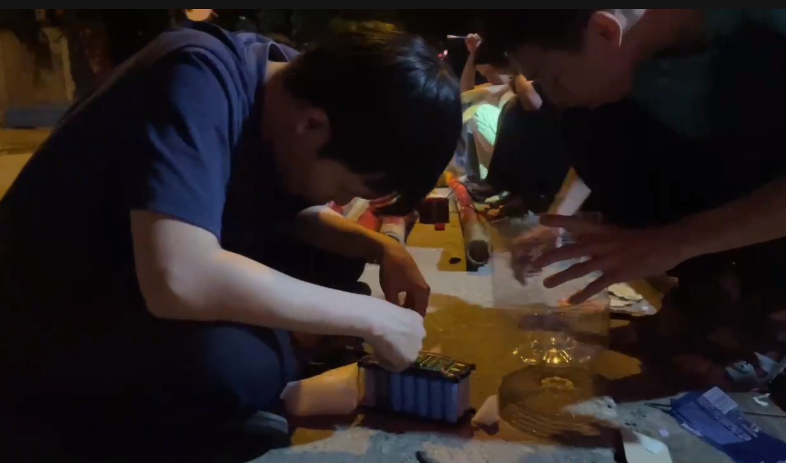
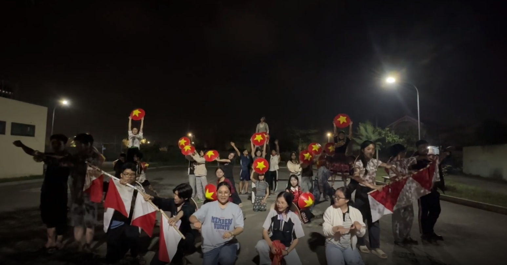
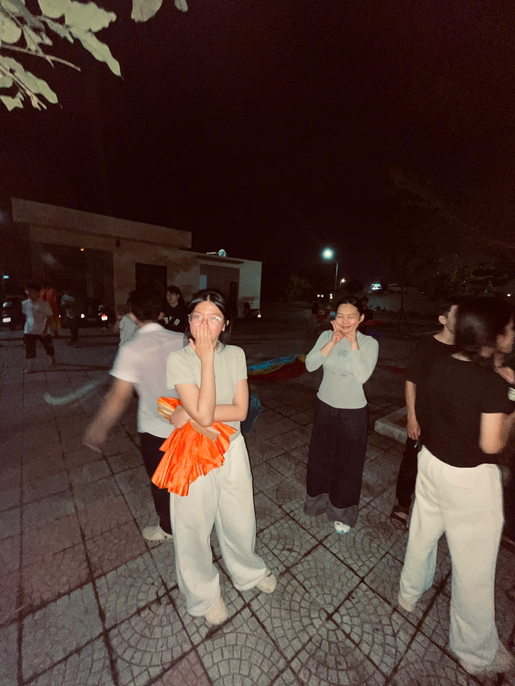

Tập thể lớp 12/5
Khởi đầu của chúng tôi rất đơn giản. Chỉ là những con người xa lạ, tình cờ được xếp chung vào một lớp học. Lúc đó, ai cũng có thế giới riêng, có những bỡ ngỡ và khoảng cách rất nhỏ nhưng đủ để ngại ngần. Rồi từng ngày trôi qua, từ việc nhớ tên nhau, quen giọng nói, quen chỗ ngồi, chúng tôi dần trở nên thân thuộc hơn. Những buổi học bình thường, những lần cùng mệt, cùng cười, cùng trải qua áp lực của tuổi mười tám đã kéo chúng tôi lại gần nhau. Từ một sự gặp gỡ ngẫu nhiên, chúng tôi có được một tập thể để nhớ, để thương, và để sau này nhìn lại mà mỉm cười.
Những điều chúng tôi đã trải qua không phải lúc nào cũng vui. Có những ngày mệt vì bài vở, áp lực thi cử, có những lúc hiểu lầm và im lặng. Nhưng xen giữa tất cả là những khoảnh khắc rất thật, những lần cùng nhau cười vì những điều nhỏ xíu, những buổi học tưởng như bình thường nhưng sau này nhớ lại lại thấy quý vô cùng. Chúng tôi đã lớn lên cùng nhau qua từng ngày, học cách kiên nhẫn hơn, biết nghĩ cho người khác hơn, và biết trân trọng những khoảng thời gian được ở cạnh nhau. Chính những điều giản dị ấy đã trở thành kỉ niệm, là thứ gắn kết chúng tôi thành một phần tuổi trẻ không thể thay thế.
Những lần vui vẻ của chúng tôi thường đến từ những điều rất giản đơn. Có khi là một câu nói bâng quơ làm cả lớp cười ầm lên, có khi là những buổi sinh hoạt, những trò chơi ngây ngô nhưng ai cũng tham gia hết mình. Trong những khoảnh khắc ấy, áp lực học tập dường như được đặt sang một bên, chỉ còn lại tiếng cười, sự thoải mái và cảm giác được là chính mình. Những lần vui như vậy không kéo dài quá lâu, nhưng đủ để khiến chúng tôi nhớ mãi, vì đó là những lúc cả lớp thật sự ở bên nhau, không lo lắng, không khoảng cách, chỉ có niềm vui rất trong trẻo của tuổi học trò.